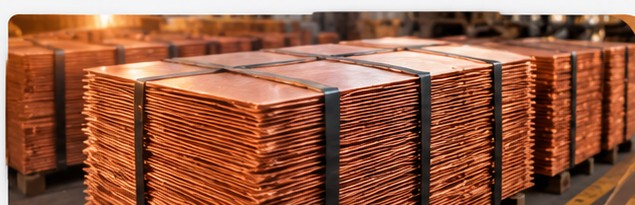

کیفیتمحوریتوجه به کیفیت در مسیر تولید
شرکت ذوب مس ذوچناز دل آتش،
از دل آتش،
ارزش میآفرینیم.
نگاهی صنعتی به آینده؛ با تمرکز بر ذوب مس، دانش فنی و کیفیت در مسیر تولید.
ELEMENT 029Cuمس | COPPER63.546
01 / 03صنعت · فناوری · آینده
دانش فنینگاه تخصصی به صنعت مس
توسعه پایدارحرکت مسئولانه رو به آینده
نگاه صنعتیتمرکز بر نیازهای صنعت

COPPER / 29درباره شرکت ذوچن؛ همراهی با
ذوچن؛ همراهی با
فردای صنعت مس
ذوچن با محوریت صنعت ذوب مس، بر اهمیت کیفیت، دانش فنی و توسعه در زنجیره ارزش این فلز راهبردی تأکید دارد. این وبسایت با هدف معرفی شرکت، حوزههای فعالیت و راههای ارتباطی طراحی شده است.
اطلاعات تخصصی، سوابق و جزئیات رسمی شرکت میتوانند در این بخش تکمیل شوند.
در ارتباط باشیم ←نگاه به تولید
مسیر تبدیل ماده به ارزش
نمایی کلی از مراحل متداول در صنعت ذوب و فرآوری مس؛ جزئیات فرایند اختصاصی شرکت باید بر اساس اطلاعات فنی تأییدشده درج شود.
◉
آمادهسازی مواد
آمادهسازی و بررسی مواد اولیه متناسب با مشخصات موردنیاز.
♨
ذوب و پالایش
فرایند حرارتی و کنترل ترکیب مواد در مسیر تولید مس.
▤
ریختهگری
شکلدهی مذاب بر اساس محصول و استانداردهای تعریفشده.
✓
کنترل کیفیت
بررسی مشخصات محصول و انطباق با الزامات فنی.
حوزههای فعالیت
جهان گسترده مس
معرفی اولیه حوزههای مرتبط با صنعت مس. فهرست محصولات نهایی و مشخصات فنی پس از دریافت اطلاعات رسمی شرکت اضافه میشود.
01 / COPPERCu
مس
فلزی ارزشمند با کاربردهای گسترده در صنایع گوناگون.
02 / ALLOYSCu+
آلیاژهای مس
ترکیبات مهندسیشده مس برای پاسخ به نیازهای متنوع صنعتی.
03 / CASTING◈
ریختهگری
فرایند شکلدهی فلزات مذاب متناسب با مشخصات محصول.
گالری تصاویر نگاهی نزدیکتر
نگاهی نزدیکتر
به صنعت مس
تصاویر محیط کارخانه، تجهیزات و محصولات شرکت را میتوان در این بخش نمایش داد.
درخواست اطلاعات بیشتر ←ارتباط با ما برای همکاری،
برای همکاری،
گفتوگو را آغاز کنیم.
برای دریافت اطلاعات بیشتر درباره شرکت و حوزه فعالیت، از راههای ارتباطی رسمی ذوچن استفاده کنید.
✉
اطلاعات تماسشماره تماس، ایمیل و نشانی رسمی شرکت در این قسمت درج خواهد شد.